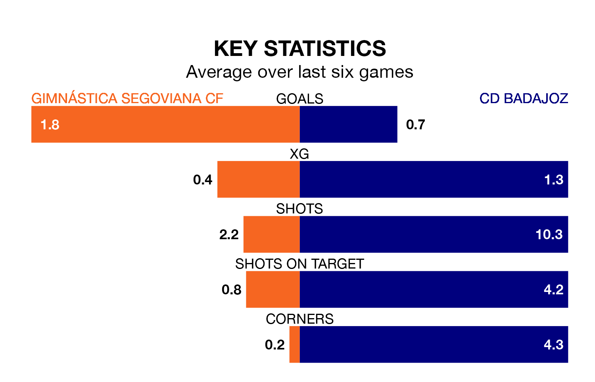

Relegation candidates CD Badajoz face a challenge away against high-flying Gimnástica Segoviana CF at Estadio Municipal de La Albuera on Sunday.
CD Badajoz are 16th in the Segunda División RFEF Group 5 table, and have picked up six wins and 13 draws in their 29 games to date.
Gimnástica Segoviana, meanwhile, are third in the standings with 46 points, having won 12 and drawn 10 of their first 28 matches, and are five points behind table-toppers SS Reyes.
With 37 goals in 28 games so far this season, Gimnástica Segoviana are scoring more than average in the league with 1.3 goals per game. And they are conceding fewer than average, letting in 24 goals at a rate of 0.9 per game.
Badajoz, meanwhile, are below average scorers, with 0.9 goals per game, compared to a league average of 1.1. They have conceded 1.0 goal per game.
The hosts are in mixed form in the Segunda División RFEF Group 5, with three wins and a draw from their last six games.
With a win and four draws over that period, the away side's form is worse – they have taken seven points from 18, compared to Gimnástica Segoviana's 10.
Gimnástica Segoviana's last match was on March 31, a 5-0 win against CP Cacereño, with Daniel Plomer Gordillo, Hugo Diaz, Juan De La Mata Rodao, Manuel Olmedilla Maeso and Pedro Astray López getting the goals for Gimnástica Segoviana.
Badajoz drew 1-1 with Getafe B last time out, also on March 31, with Antonio Jou Mas on the scoresheet.
Updated: 16:41 (UTC), 04/04/24